People remember
A character should recall meeting you, not act like you are a stranger every time.
AN IDEA IN DEVELOPMENT · OCTOBER 2026
Imagine a fantasy world where the people you meet remember you, where choices have consequences, and where yesterday still matters when you return.
That is what Arkvoid is working toward. First, one small world that can remember what really happened.
A big vision. A small first step.

Most apps forget the moment you close them. Arkvoid is exploring a digital world that keeps its history.
The characters, their plans, their friendships and the events around them should stay connected over time. When you leave and come back, the world should have something real to remember.
A story can be made up.
A world should remember what actually happened.
A character should recall meeting you, not act like you are a stranger every time.
If you help someone or change a place, later events should reflect that choice.
Plans and relationships should continue within clear rules, even while you are away.
AI can suggest what a character might say or do. But a suggestion should not automatically become a fact.
The world checks the action, saves what really happened, and lets characters react to that record. That is how Arkvoid hopes to keep its world consistent.
A player or character takes an action.
The model proposes an action, dialogue or response.
The system checks what is allowed before changing the world.
The world keeps a record it can refer to later.
Future choices can reflect what really happened.
This is a proposed design, not a claim that the full system is already built.
Meet Lian, help her recover a letter, and return a day later. Choose a moment to see what a persistent world could mean.
DAY 01 / THE BRIDGE
You meet Lian on a stone bridge and help her recover a letter. The event is saved as part of the world's history, not left behind in a chat.
You met Lian. She has the letter. She knows you helped.
Illustrative scenario only. This describes the intended experience, not a feature that is already live.
Arkvoid has a bigger direction, but the first build should stay small enough to test properly. Each layer depends on the one before it working well.
A browser-based fantasy world with a handful of characters, memories, routines and relationships.
THE FIRST PROOFThe underlying system that saves events, checks actions, and keeps the world consistent over time.
THE TECHNICAL COREA shared foundation for worlds on the web, phones and perhaps immersive devices if people need them.
THE LONG-TERM OPTIONCustom hardware, a new foundation model and a global rendering network are outside the first step.
A beautiful world is not enough. The memory must hold up, the characters must stay consistent, and the system must be affordable to run.
Check a fixed set of events after many interactions and restarts.
95%+Proposed target: correct facts on a defined test setTest whether verified routines can run again without asking a large model to solve them from scratch.
40–50%Proposed reduction in latency or model calls on eligible repeatsUse simple schedules for background activity and reserve deeper reasoning for moments that matter.
70%Proposed reduction in background simulation cost, if quality holdsThese are research goals from the October 2026 strategy plan, not achieved results. Benchmarks, baselines and test conditions must be published before any result can be claimed.
Each phase unlocks only after the previous claim survives testing.
Define one location, character rules, the event format and a test suite.
GATE · One executable milestoneBuild the browser world, memory, routines, event log and restart recovery.
GATE · State survives restartCompare memory approaches and benchmark recurring routines and cost.
GATE · Repeatable benchmark winRun a small cohort, observe return visits, test safety and model costs.
GATE · Evidence of durable demandBuild APIs and developer tools only if outside users can benefit.
GATE · Developers succeed independentlyAN INDEPENDENT COMPUTING THESIS
Founder, Arkvoid
The ambition is a new computing layer. The first responsibility is much simpler: make one small world remember correctly, behave coherently, and give people a reason to return.Back to the beginning ↑